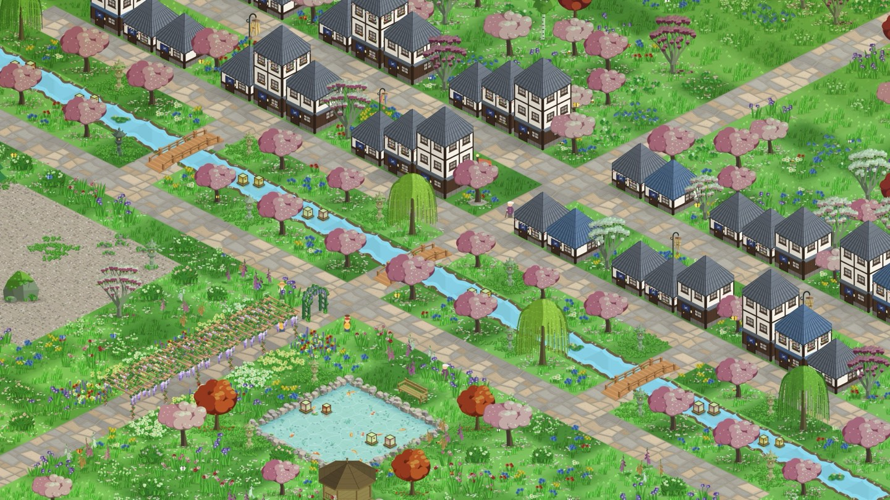

Every kind of moving counts
StepHaven is a game you play by moving, and walking isn't the only way to move. Here's how wheelchair pushes and workouts earn points too.

In StepHaven, the steps your iPhone counts become points you spend on a cozy little town. That works well if you walk. It leaves out anyone who gets around in a wheelchair, and anyone whose exercise doesn't come in steps, like a bike ride, a swim or a rowing session. So StepHaven has two more ways to earn.
Wheelchair pushes
An Apple Watch in wheelchair mode counts pushes instead of steps, and it saves them to Apple Health. Turn on Count Wheelchair Pushes in StepHaven's settings (or tick "I use a wheelchair" while setting up) and those pushes earn points.
Each push is worth two points. A push covers more ground than a step, and a typical day of pushing comes out at roughly the same number of points as a typical day of walking. Whatever you can build on a walking day, you can build on a pushing day.
Once pushes are on, the game stops calling your points "steps". The counter shows what you have to spend, prices show plain numbers, and the widgets say pushes on days when you've pushed more than you've walked.
StepHaven only asks Health for push data after you switch this on, so people who don't use it never see an extra permission request.
Ember: workouts that don't come in steps
Ember is how other exercise turns into points. Before you start a workout, you light an Ember for 15, 30, 45, 60 or 90 minutes. While it burns, StepHaven counts the exercise minutes your Apple Watch records and turns the calories you burn in them into points.
You can light one from the app, from the Ember widget on your Home Screen, from Control Center, with the Action button, or by asking Siri. While it's burning, a Live Activity on your Lock Screen and in the Dynamic Island shows how long is left and how much you've earned.
Why you light it first
We could have counted every calorie all day automatically. We chose not to, for two reasons.
- It's a moment. Lighting an Ember before a ride or a swim feels like deciding to do it, and the town is waiting when you get back.
- It's fair to walkers. A minute that already earned points as steps doesn't pay twice. If you light an Ember and go for a walk, you get the steps, and Ember only adds what the steps missed.
The limits, plainly
| Rule | Amount |
|---|---|
| Length of one Ember | 15 to 90 minutes |
| Ember time a day | up to 120 minutes |
| Points paid in full | up to 5,000 a day |
| After that | half rate, to 8,000 |
A hard day's training earns about as much as a good long walk, and no more. Only calories measured by Apple devices count, so another app can't fill in numbers for you. Points from an Ember appear in your balance as it burns. They're settled about an hour after it goes out, which gives your Watch time to finish syncing.
Your data stays put
Steps, pushes and workout data are read from Apple Health on your phone, only to work out your points. None of it is sent to us or anyone else. You can read exactly what StepHaven reads in the privacy policy.
What you need
- An iPhone for steps, which it counts on its own.
- An Apple Watch for wheelchair pushes and for Ember workouts.
If something about how StepHaven counts movement doesn't work for you, we'd like to hear about it. Get in touch through the support page.
StepHaven: Cozy Town Builder
Free on iPhone. No ads, and your steps stay on your phone.
Download on theApp Store